Celebrity Style Watch
Celebrity style, read as trend signals
Every week Forecut tracks red carpets, premieres, award shows and celebrity weddings across six regions, records who wore what and by whom, and links each look to the trend details it confirms.
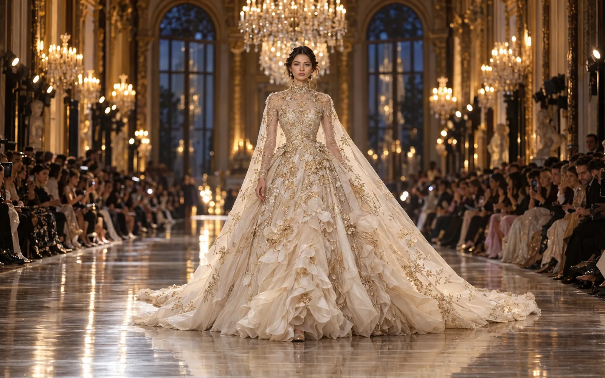
Forecut illustration. We do not publish celebrity or red-carpet photographs; follow the source links to see the original looks.
This week in celebrity style
- Corsets go global: corset bodysuits at the CFDA Awards in New York, contrast lace corsets in Miami, a beaded corset top at the Melbourne Cup and corset saree blouses at Manish Malhotra's Diwali party.
- Fringe moves from hem to cape: a fringe-hem mini (Sergio Hudson SS27 for Brandy), fringed western capes in Miami and Juliette Freire's fringed mini with a back train (Carlos Bacchi) in Recife.
- Melbourne Cup Day trades black and white for single saturated colours: plum (Steven Khalil), red (By Johnny), turquoise (J'Aton Couture) and gold (Alex Perry), with opera gloves.
- Diwali in Mumbai: pre-draped and sequinned sarees with corset or halter blouses, gota patti and bandhani, and burgundy velvet on both men and women.
- Coats as evening dresses: Sharon Stone's belted black leather trench dress at Women in Film in Beverly Hills.
- Craft travels: Gaurav Gupta's sculpted red sequin gown on Eva Longoria in Paris; floral-embroidered buba and iro and chevron-embroidered tailoring from the Nollywood cast of 'The Four' in London.
Week of 31 Oct 2026
- Next season is already on the carpet: Christian Siriano Spring 2027 at the WSJ. Innovator Awards in New York, alongside Fall 2026 from Issey Miyake, Ashlynn and Ernesto Naranjo.
- Off-white and corsetry lead in Buenos Aires: a laced-corset Valentina Schuchner dress, custom Vero de la Canal and feather-hem gowns at Premios Ídolo.
- Classic black tie with one jewel note: wide satin peak lapels, a gold brooch and bow tie (Adekunle Gold) and wide-cut, tie-free suits (Luis Díaz) at the Ballon d'Or in London.
- Contrast is the new festive rule in India: pink-to-red ombré sarees with emerald blouses, organza jackets over anarkalis and black mirror-work lehengas.
- Race-day dressing opens in Melbourne: tweed sheaths and sculpted necklines (Rebecca Vallance for Helena Christensen), white gowns with black hats on Derby Day.
- Gulf and Lebanese stars carry Indian craft in Dubai: Maya Diab in a silver Tarun Tahiliani lehenga; Cyrine Abdel Nour closing Pallavi Puri in bridal white.
Week of 25 Oct 2026
- Velvet tailoring for men: Eddie Redmayne (Armani, cobalt blue) in Los Angeles and Tom Hiddleston (Ralph Lauren Collection, double-breasted) in London.
- Corsetry everywhere: a lace-up corset dress in London, steel boning in New York, corset blouses on Mumbai sarees and corseted bridal gowns in Nigeria.
- Crystal and bead embroidery as the evening finish, from Rome to Mumbai to Lagos wedding guests.
- Black tie gets a single loud note: a bright yellow shirt and tie (Loewe), a polka-dot pocket square (BOSS), a white floral brooch (Tom Ford).
- SS27 runway pieces are already on red carpets (Mugler, Roberto Cavalli, Erdem, Ralph Lauren, Tom Ford), months before they reach stores.
Manish Malhotra's annual Diwali party
Mumbai, India
- Nita Ambani · Manish Malhotra
Fuchsia satin saree with gold lacework and multi-coloured crystals. - Kareena Kapoor Khan
Champagne-gold sequinned saree with a halter-neck blouse. - Madhuri Dixit
Pink saree with a matching corset blouse. - Sanya Malhotra
Bandhani saree with a gold corset. - Sharvari Wagh
Lemon-green embellished organza saree with a blush-pink blouse. - Janhvi Kapoor
Black-and-gold tiger-stripe-inspired fishtail lehenga with a sheer dupatta. - Kajol
Black velvet saree. - Sonakshi Sinha
Burgundy velvet co-ord set with a matching jacket. - Vicky Kaushal
Dark burgundy velvet kurta with black trousers. - Raghav Chadha
Black bandhgala suit.
Sources: WION · t2online. Asia forecast →
Ramesh Taurani's Diwali party
Mumbai, India
- Shilpa Shetty
Metallic silver-grey pre-draped georgette saree with mirror and sequin embellishment and a sleeveless sequin-embroidered blouse. - Aditi Rao Hydari
Pink leheriya lehenga set with gold gota patti work. - Siddharth
Brown bandhgala jacket over a matching asymmetric kurta with ivory flared silk trousers. - Bhumi Pednekar
Ivory saree with mirror-work borders and floral embroidery, with an embellished halter cross-neck blouse. - Raveena Tandon
Olive-green asymmetric kurta set with gold mukaish and zari embroidery and flared full-length sleeves.
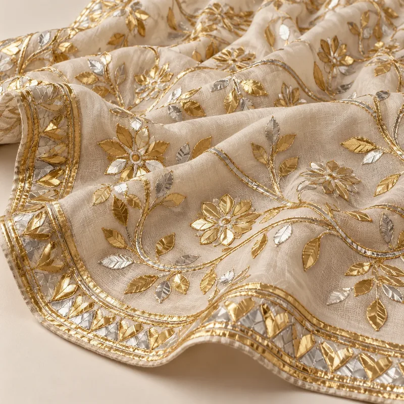
Gota patti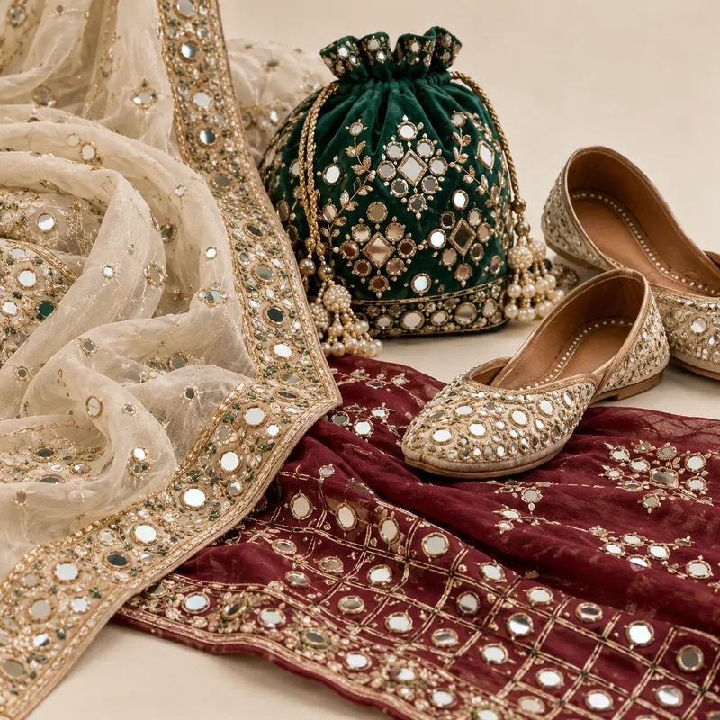
Mirror work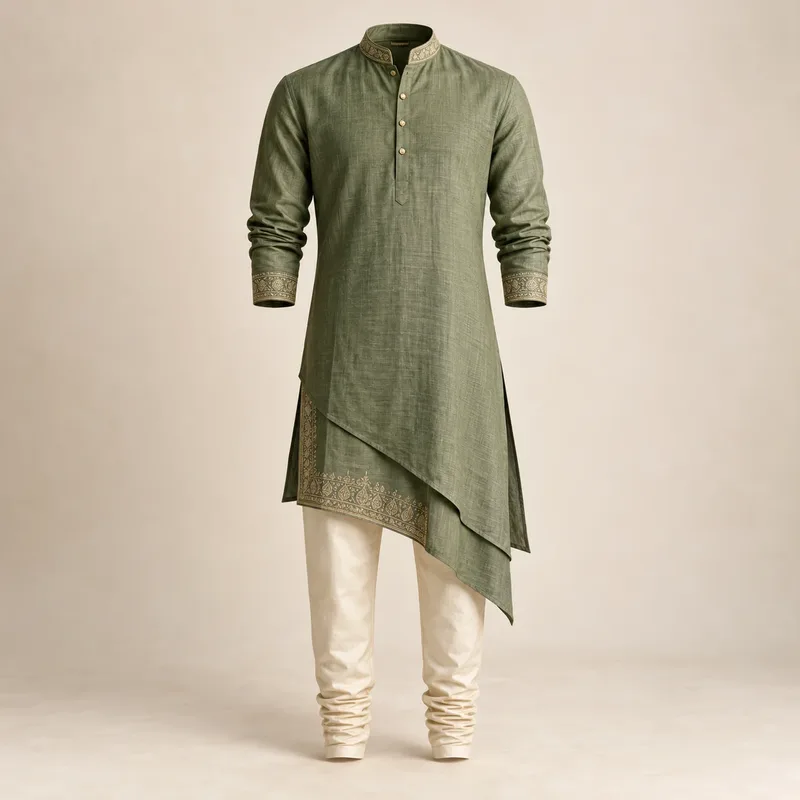
Asymmetric-hem kurtasSources: Free Press Journal. Asia forecast →
Karwa Chauth celebration at Anil and Sunita Kapoor's home
Mumbai, India
- Shilpa Shetty
Silk saree shading from pastel pink to deep red with gold zari florals and border, worn with an emerald-green silk blouse and emerald-and-gold jewellery. - Sonam Kapoor
Deep crimson anarkali with a crushed-texture skirt and V-neck gold-zari top, under a sheer rust-orange and gold organza jacket; tasselled potli. - Mira Rajput
Beige-gold tissue silk saree with mirror-work borders and a matching high-neck, short-sleeve blouse. - Aamir Khan
Deep blue floral kurta with black harem trousers. - Gauri Khan
Pastel floral-print salwar suit. - Anshula Kapoor
Red suit with gold embroidery around the neckline.
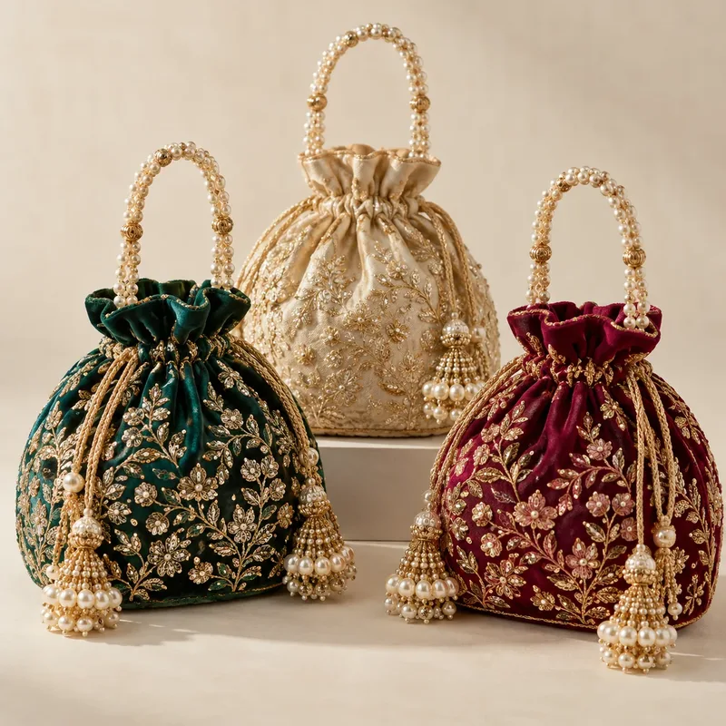
Potli bagsSources: Bollywood Bubble. Asia forecast →
Dubai Fashion Week SS27 showstoppers
Dubai Design District, Dubai, UAE
- Maya Diab · Tarun Tahiliani
Showstopper at the closing show: silver high-waisted lehenga with an embellished border, embroidered sweetheart-neck blouse with thin straps and a sheer embellished dupatta; pearl-and-diamond choker and matha patti. - Cyrine Abdel Nour · Pallavi Puri
Closed the 'Beyond Borders' show in an embellished white bridal gown. - Lisa Haydon · Pallavi Puri
Opened the same show.
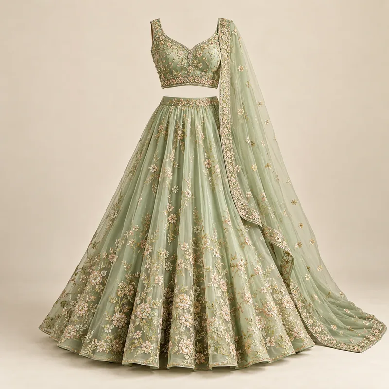
Light organza lehengasGlass-bead and zardozi layering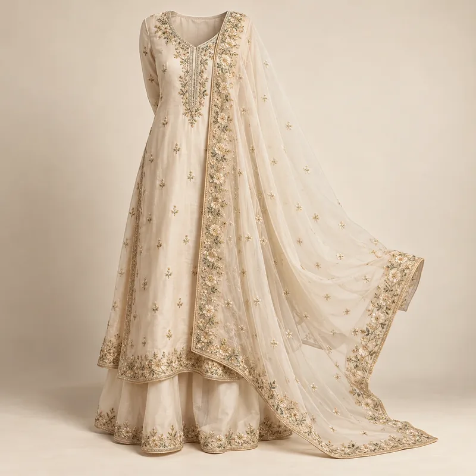
Organza dupattas with embroidered bordersOmbré sequin gownsSources: The National · Free Press Journal · Emirates Woman. Asia forecast →
IBTIDA Ek Mehfil Diwali celebration
Mumbai, India
- Shilpa Shetty
Ivory lace saree with a sleeveless, corset-style blouse embellished with pearls, beads and crystals; crystal bag with beaded tassels. - Huma Qureshi
Rust-orange and gold Anarkali with zari embroidery, gota patti and mirror work. - Mrunal Thakur
Custom black saree with a structured, corset-style blouse. - Shriya Saran
Shimmering silver-grey saree with a heavily embellished blouse and a layered kundan and pearl choker. - Nimrat Kaur
Sheer brown saree with metallic embellishment and a deep-neck blouse embroidered in silver and gold. - Urmila Matondkar
Pista-green gharara set with a heavily embellished kurta.
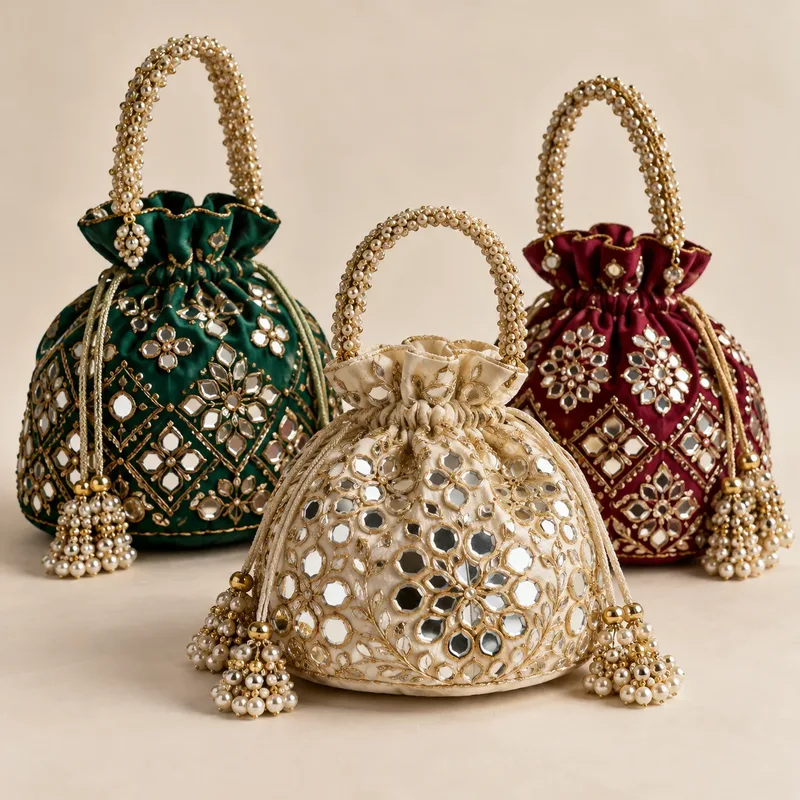
Mirror-work bagsSources: Free Press Journal. Asia forecast →
Global Gift Gala Paris
Four Seasons Hotel George V, Paris, France
- Eva Longoria · Gaurav Gupta
Strapless red sequin gown with a sweetheart neckline, sculpted crisscross bodice, asymmetric draped panel and thigh-high slit.
Sources: ¡HOLA! USA. Europe forecast →
70th Ballon d'Or
London, UK
- Adekunle Gold
Black double-breasted tuxedo with wide satin peak lapels, white pleated shirt, black satin bow tie and a circular gold brooch with a blue stone; dark oval sunglasses and patent shoes. - Burna Boy
Black suit with dark sunglasses; reports differ on the detail (metallic embellishment, velvet or a plain loose cut). - Luis Díaz
Wide-cut black suit with a black open-collar shirt and no tie. - Geraldine Ponce
Black strapless dress with a bright-stone necklace and matching earrings. - Ronaldo Nazário
Black suit, white shirt, light-blue geometric-print tie and a dark pocket square. - Scarlett Camberos
Glossy burgundy dress with a straight neckline.
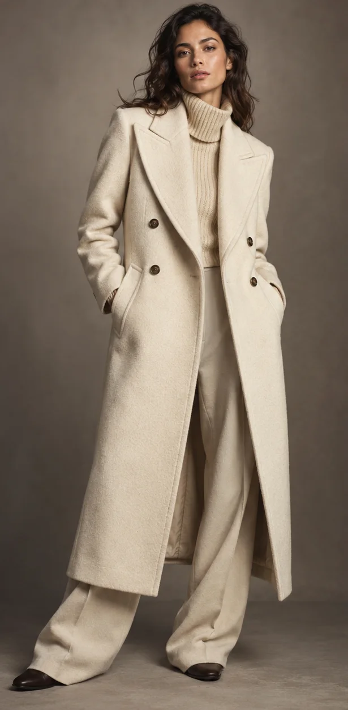
Wide peak lapels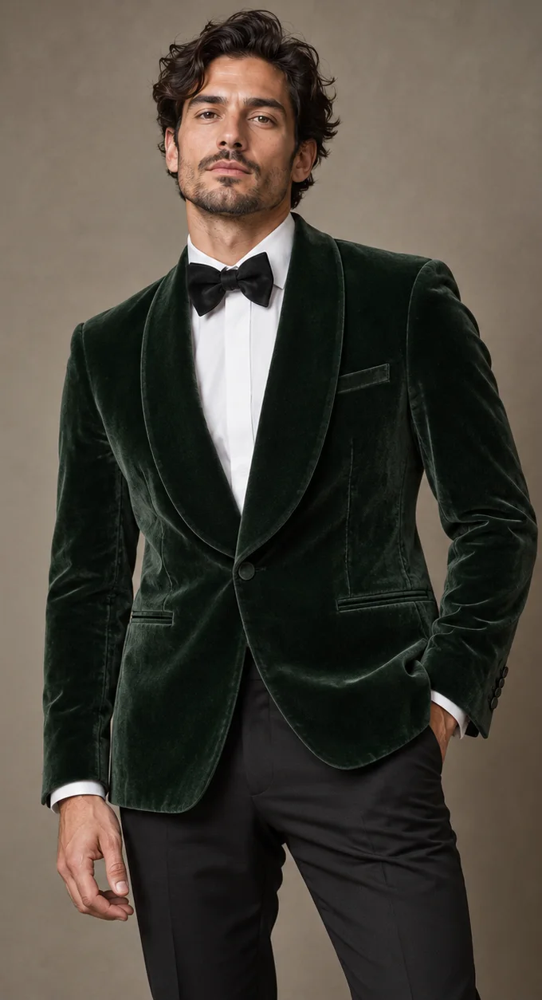
Velvet dinner jacketsOversized lapel flower broochesGenerous 1980s double-breasted suitsSources: BellaNaija · TimesLIVE · Infobae. Europe forecast →
Esquire UK's Better Men Honours
Claridge's, London
- Tom Hiddleston · Ralph Lauren Collection
Velvet double-breasted suit. - Sam Claflin · Tom Ford (Fall 2026)
Patterned evening coat with a draped scarf. - Aaron Pierre · BOSS
Black double-breasted tuxedo with a polka-dot pocket square. - Haider Ackermann · Tom Ford
Black tailoring with a white floral brooch. - Kit Butler · McQueen
Black suit with a skull-print tie.
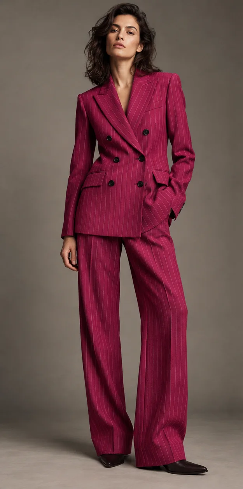
Pinstripe double-breasted suitsOversized lapel flower brooches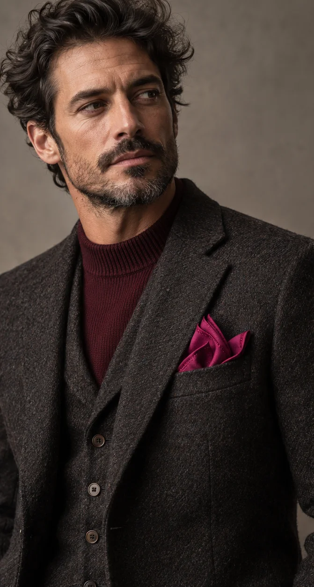
Pocket squaresSources: Red Carpet Fashion Awards. Europe forecast →
Rome Film Festival premieres and parties
Rome, Italy
- Jenna Ortega · Roberto Cavalli (Spring 2027)
Printed velvet gown at the Klara and the Sun premiere. - Leïla Bekhti · Ralph Lauren (Spring 2027)
White shirt with a gold skirt. - Kim Kardashian · Erdem (Spring 2027)
Crystal-embellished dress with a sheer black lace skirt, at an All's Fair cast party.
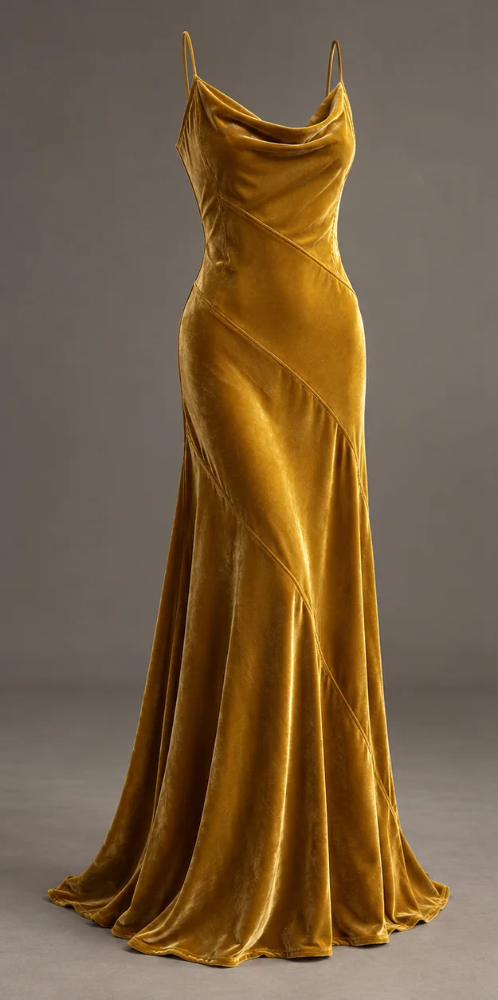
Bias-cut velvet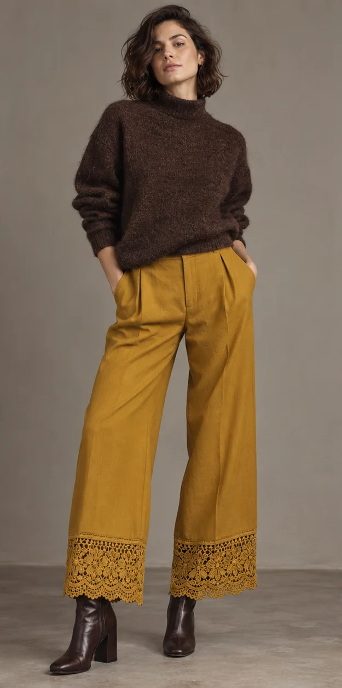
Lace-trimmed hems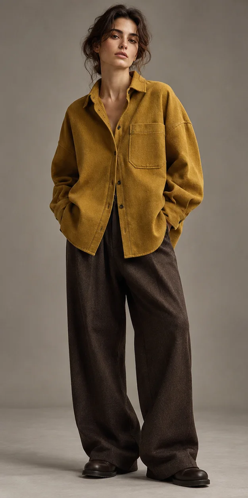
Oversized boyfriend shirts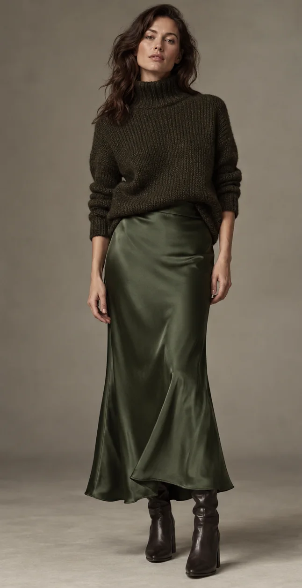
Satin slip skirtsSources: Red Carpet Fashion Awards. Europe forecast →
Clayface premiere and DeMellier flagship opening
London, UK
- Naomi Ackie · Dilara Fındıkoğlu (Fall 2025)
Black lace-up corset dress. - Simone Ashley · TOVE
Red dress with black mules and a black bag. - Céline Dion (Paris) · Chanel Haute Couture (Fall 2026)
Black jacket with a gold chain belt over light-wash wide-leg jeans, on the final night of her Paris residency.
Sources: Red Carpet Fashion Awards. Europe forecast →
Women in Film Honors 2026
The Beverly Hilton, Beverly Hills, USA
- Sharon Stone
Black leather trench-style dress belted at the waist, with sheer black tights and pointed heels. - Hannah Waddingham
Turquoise satin gown with a plunging V-neck, open back and flowing skirt. - Salma Hayek
Blue dress with a gold belt.
Sources: HELLO!. North America forecast →
CFDA Fashion Awards 2026
American Museum of Natural History, New York, USA
- Keke Palmer · Bob Mackie
Vintage gold strappy dress, worn as host. - Lupita Nyong'o · GapStudio by Zac Posen
Custom red twisted-front crop top and floor-length column skirt under a light-wash denim jacket. - Tinashe · Christopher John Rogers
White bra top with black and green stripes over a voluminous black skirt with yellow, red and white side panels. - Megan Thee Stallion · Kim Shui
Sheer wine-red beaded gown with a high beaded collar, waist cut-out and a mermaid skirt with a long train. - Brandy · Sergio Hudson
Spring/Summer 2027 white button-down with a popped collar over a black fringe-hem mini skirt. - Olandria Carthen · Brandon Blackwood
Black corset bodysuit with a sweetheart neckline, sheer panels and a train. - Naomi Osaka · Miss Claire Sullivan
White one-shoulder gown with black dots, a puffed sleeve, a black ribbon sash and a full bubble skirt. - Law Roach · Luar
Spring/Summer 2027 black satin suit with golden pod motifs and a yellow feather boa. - Shaboozey · Ralph Lauren
White blazer and shirt with a turquoise bolo tie, distressed straight-leg jeans and black loafers.
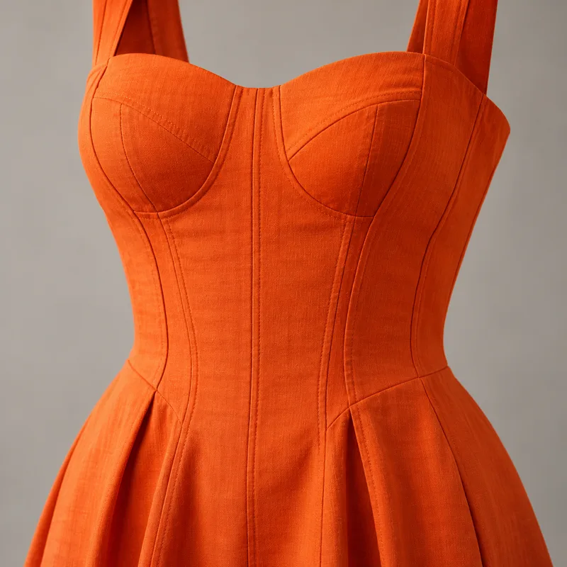
Corset-seamed dresses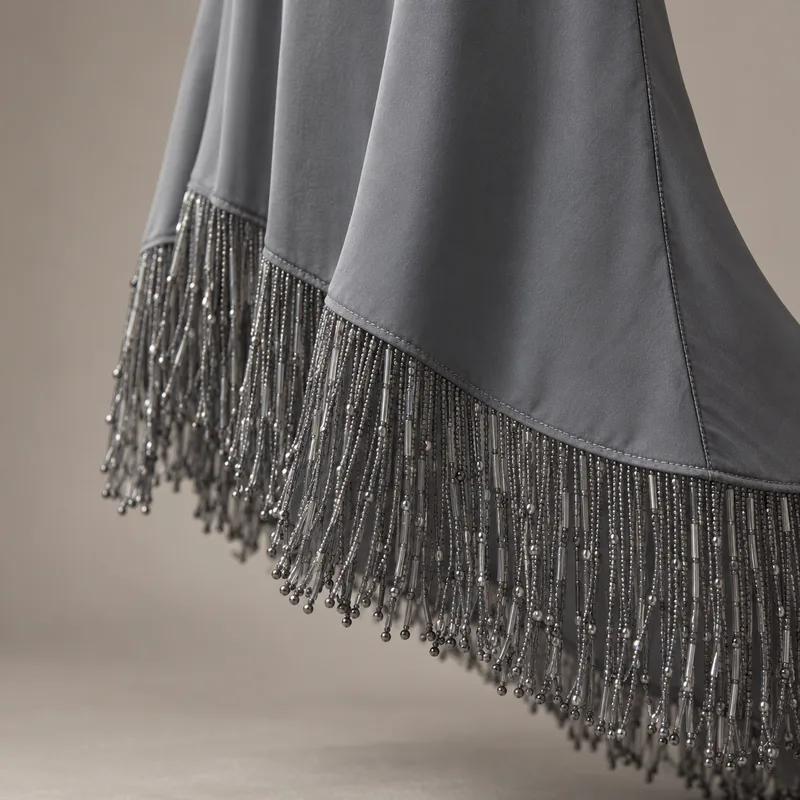
Fringed hems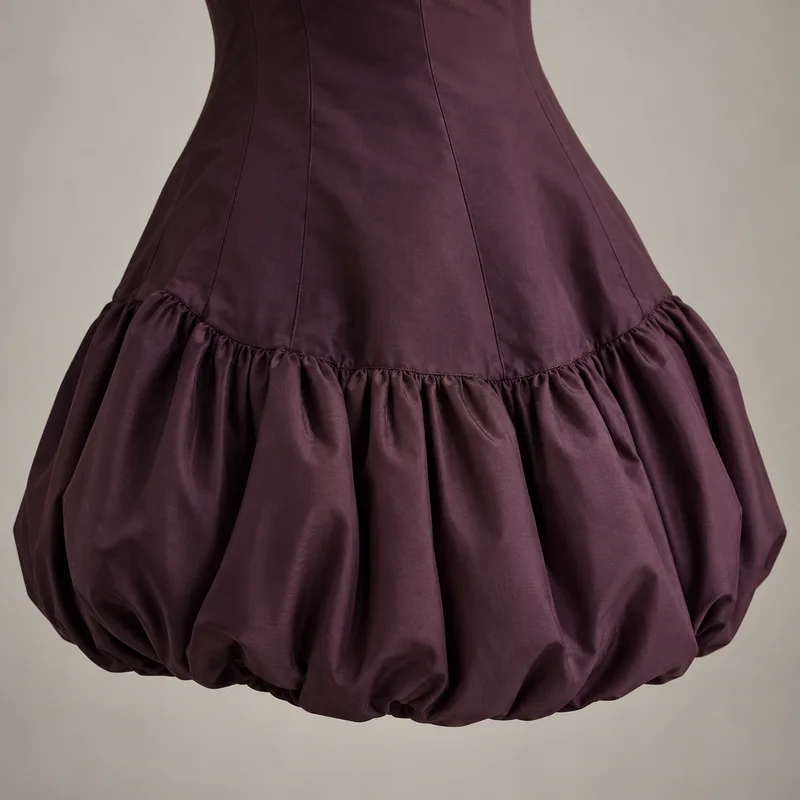
Bubble-hem dresses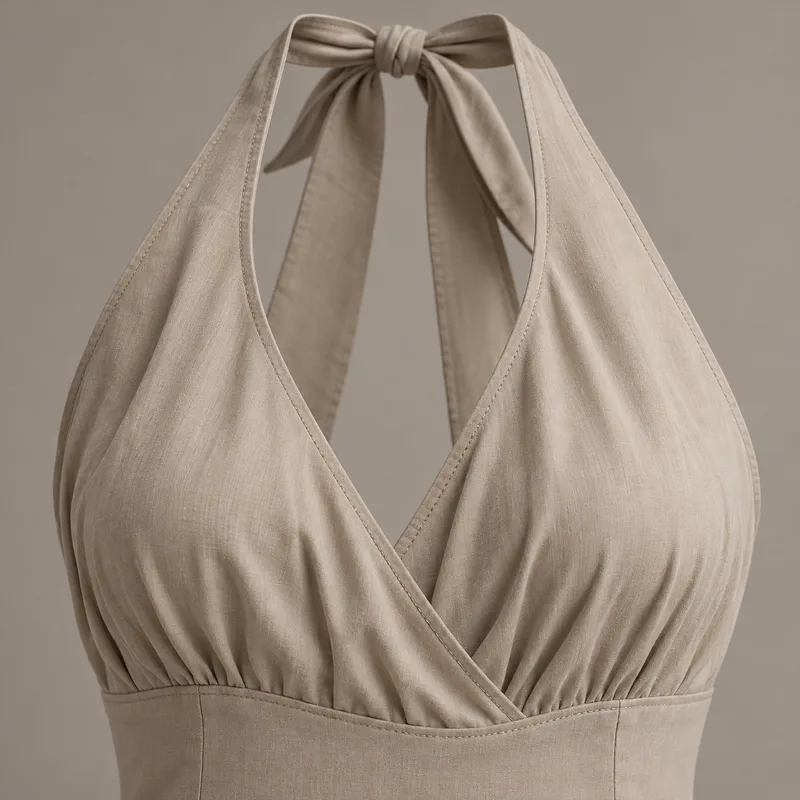
Halter-neck dressesSources: HelloBeautiful · Hypebae. North America forecast →
WSJ. Magazine 2026 Innovator Awards
Museum of Modern Art, New York, USA
- Adut Akech · Ashlynn
Two Fall 2026 looks combined: a chartreuse textured jacket with exaggerated shoulders and a fitted waist over a black skirt with an asymmetric panel in the same fabric. - Ashley Graham · Ernesto Naranjo
Black Fall 2026 two-piece with sheer sculptural panels standing away from the body. - Ciara · LaPointe
Black gown with a twisted halterneck, cut-outs and ruching across the waist and hips. - Emmy Rossum · Hermès
Subtly embellished black sleeveless gown with a slit skirt. - Irina Shayk · Issey Miyake
Ivory strapless Fall 2026 gown with draped sleeves and an open back. - Jordyn Woods · Christian Siriano
Spring 2027 gown with a sculptural dusty-pink asymmetric bodice and a draped black velvet skirt. - Jordan Roth · Matières Fécales
Sheer red tailored Spring 2026 ensemble in layered tulle with diagonal fabric strips, worn with black boots.
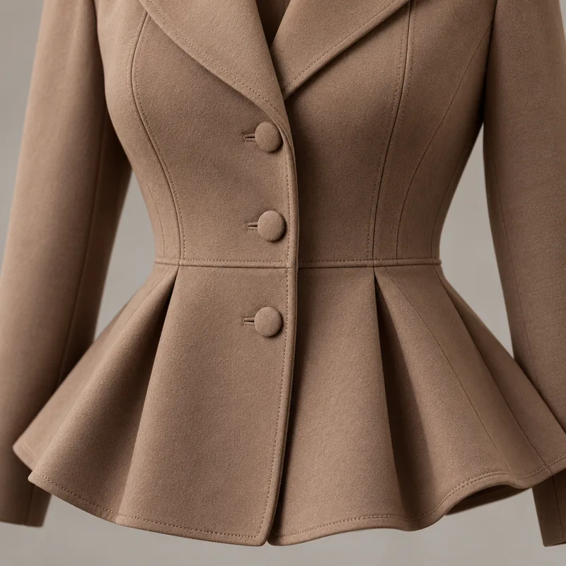
Cinched peplum jacketsBias-cut velvetSources: Red Carpet Fashion Awards. North America forecast →
AFI Fest Opening Night Gala: WILDWOOD premiere
Los Angeles, USA
- Awkwafina · Taller Marmo
Blue skirt mixing textile weights, with a deliberately oversized overlay tucked into the waist. - Angela Bassett · Christian Siriano
Design with wing-like sculptural elements. - Amandla Stenberg · Zimmermann
Lace dress with a detail at the waist. - Peyton Elizabeth Lee · Rosie Assoulin
Sharp, modern look with a skirt designed to read from the back; cocktail rings.
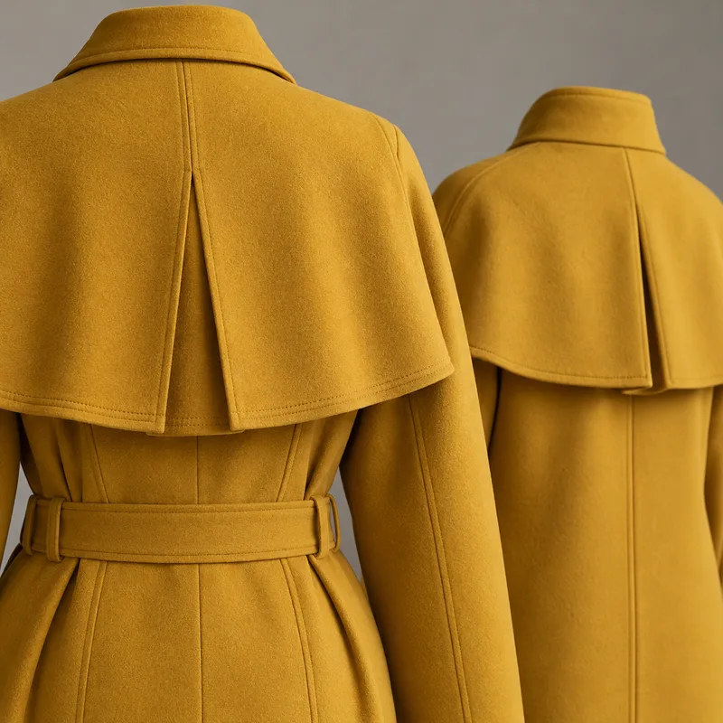
Cape backs and capelets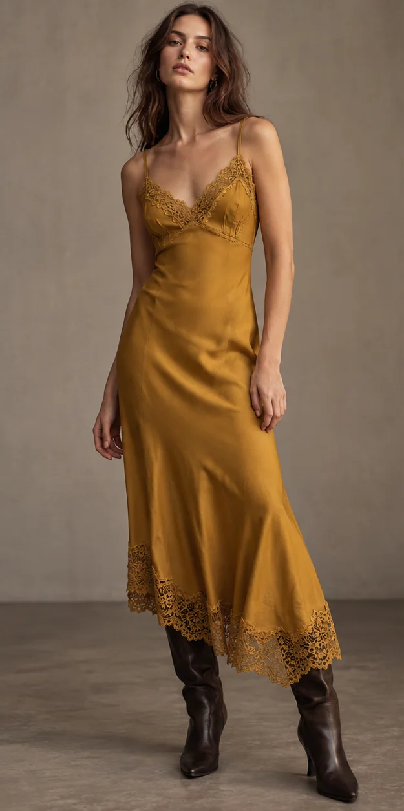
Lace-edged bias slipsDouble-layer sheer skirtsSources: Tom + Lorenzo. North America forecast →
Academy Museum Gala
Los Angeles, USA
- Jodie Turner-Smith · Mugler (Spring 2027)
Sculptural zebra-print look with a dramatic headpiece. - Eddie Redmayne · Giorgio Armani (Fall 2026)
Cobalt-blue velvet look. - Diego Calva · Loewe
Black tuxedo with a bright yellow shirt and matching tie. - Charles Melton · Artisanal ERL
Tailcoat with gold embellishment and wide-leg trousers. - Kendall Jenner, Colman Domingo, Elle Fanning, Cailee Spaeny, Clairo · Valentino
Valentino looks across the guest list. - Taylor Swift, Greta Lee · Dior
Dior, with Greta Lee in Dior Haute Couture.
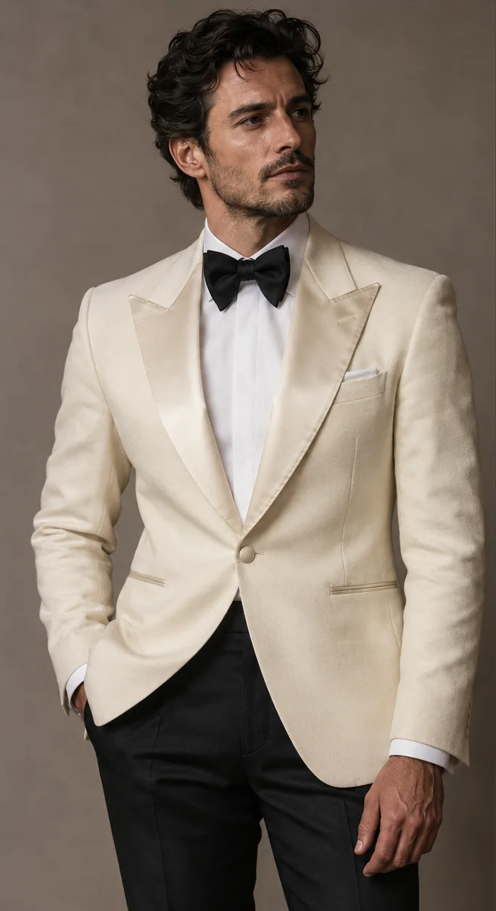
Single-button tuxedo jackets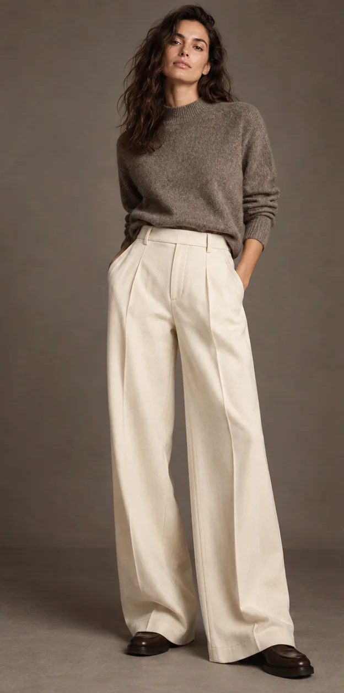
Wide-leg suit trousers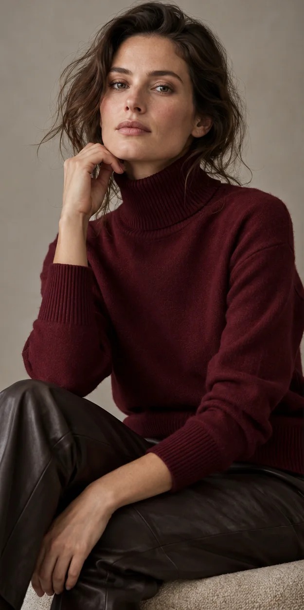
Jewel-tone cashmereSources: Red Carpet Fashion Awards · Just Jared. North America forecast →
Billboard Latin Music Awards and New York screenings
Miami and New York, USA
- Rosalía · Tom Ford (Spring 2027)
Black tuxedo tailoring with a bra top and draped skirt, at the Billboard Latin Music Awards, Miami. - Jenna Ortega · Elias Matso
Steel-boned, crystal-embellished dress at the Klara and the Sun screening, New York. - Helen Mirren · Matières Fécales (Fall 2026)
Black tulle skirt with pearl jewellery, A Talent for Murder premiere, New York.
Sources: Red Carpet Fashion Awards. North America forecast →
¡HOLA! Américas Latina Powerhouse Gala 2026 (Latin American stars)
Arsht Center, Miami, USA
- Ana Lucía Domínguez
Bright blue dress with an embroidered corset and a matching clutch. - MŌRIAH
White strapless mermaid gown with a contrast black lace corset and long bow-trimmed gloves. - Andrea Meza
Metallic strapless gown with a fringed skirt. - Irany
All-red country look: minidress over sheer red trousers with an embroidered fringed cape and a cowboy hat. - Siudy Garrido
Sheer black halter dress with a trumpet cut and draped silhouette. - Daniella Knutsen
Pale pink lace dress with a wide front opening and a feathered cape.
Sources: ¡HOLA! USA (Spanish). South America forecast →
Wedding of Juliette Freire and Kaique Cerveny
Instituto Ricardo Brennand, Recife, Brazil
- Juliette Freire · Carlos Bacchi
Ceremony: white strapless princess gown with a structured bodice, low basque waist, deep-pleated full skirt and long sheer veil, in Brazilian silk combined with fabric made from recycled PET bottles. - Juliette Freire · Carlos Bacchi
Reception: strapless dress with raised flower-like appliqués, an asymmetric front drape over a short textured mini and a fluid fringed back train. - Giovanna Ewbank · Zimmermann
Long green dress.
Sources: Purepeople Brasil · Terra. South America forecast →
Premios Ídolo 2026
Usina del Arte, Buenos Aires, Argentina
- Lola Latorre · Valentina Schuchner
Off-white dress with a laced corset bodice and an embroidered skirt; Jean Pierre white-gold and diamond jewellery. - Cami Mayán · Vero de la Canal
Custom off-white dress; Jean Pierre diamond pendant and earrings. - Sofía "La Reini" Gonet · Es Gone
Structured dress as host, with Jean Pierre jewellery and a clutch. - Moria Casán
Fitted aqua-green dress with a matching stole, silver waist clasp and floral sunglasses. - Jimena Barón
Off-white suit with black buttons over a lingerie-style top, with a black clutch. - Juli Poggio
Off-white long-sleeved design with sheer panels, embroidery and feathers on the lower skirt; later a short white-and-pink dress with a heart neckline.
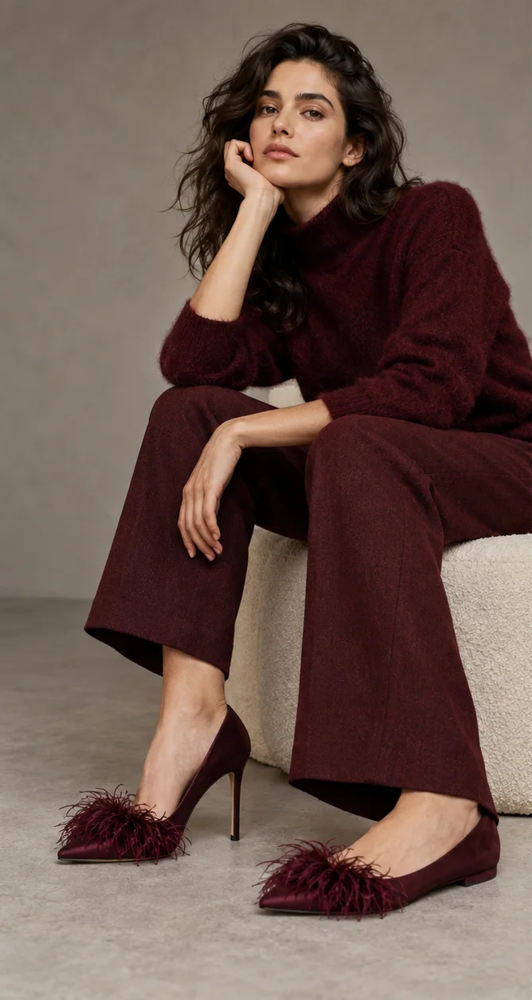
Feathers on satin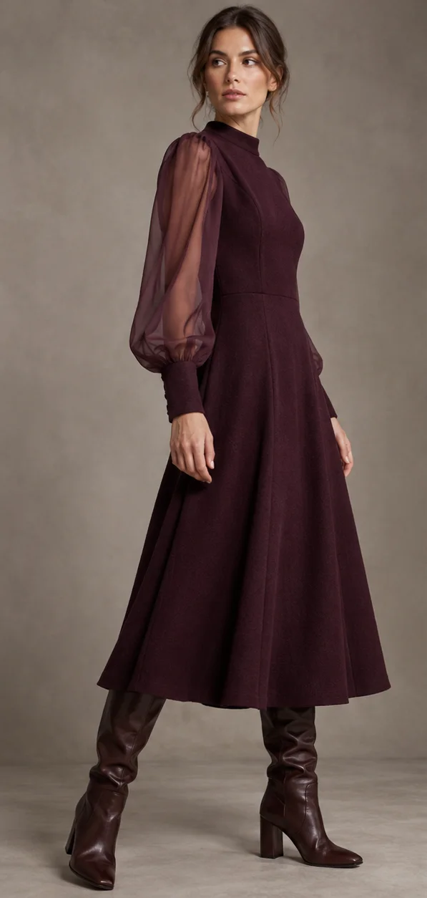
Sheer-sleeve dressesSources: La Nación · Revista Gente. South America forecast →
Festival do Rio 2026 (28th edition)
Rio de Janeiro, Brazil
- João Vitor Silva
White linen suit, brown shirt and black boots. - Marcos Palmeira
Short-sleeved white shirt with leaf embroidery, grey trousers and beige-and-black sneakers. - Karol Lannes
Short black dress with sheer sleeves, gold necklaces and chunky tread-sole black boots. - Bárbara Paz
All black: cropped leather jacket, blouse with sheer panels and a glossy varnished skirt. - Alice Wegmann
Satin-look set of cropped shirt and champagne wide-leg trousers. - Isis Valverde
Olive-green cropped blouse with voluminous sleeves, white tailored trousers and black pumps.
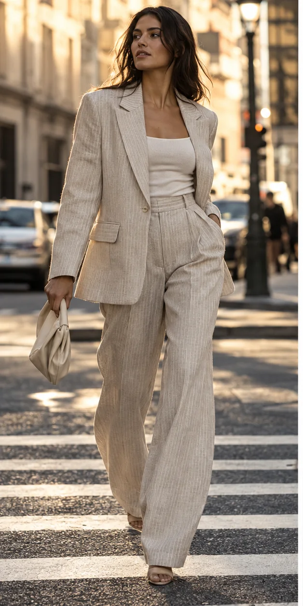
Linen and seersucker suitingSheer-sleeve dressesWide-leg suit trousers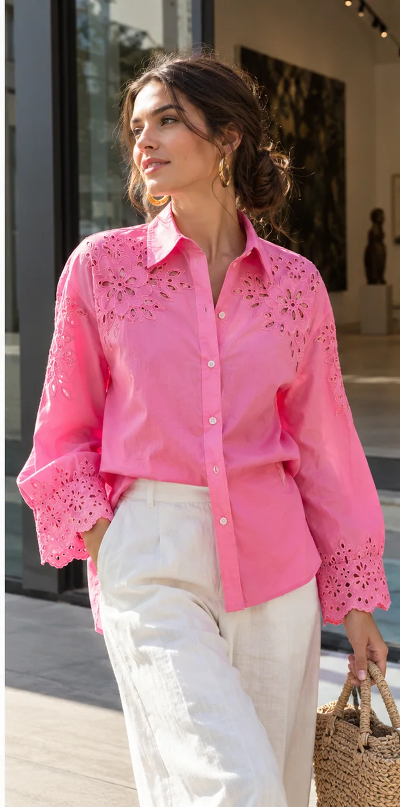
Lace-embroidered poplin shirtsSources: Purepeople. South America forecast →
Wild Horse Nine premiere
Santiago, Chile
- Mariana di Girolamo · Louis Vuitton
Custom warm-grey draped gown.
Sources: Red Carpet Fashion Awards. South America forecast →
Nollywood cast of 'The Four: No One Fights Alone' in London (ahead of the 29 Nov UK premiere)
London, UK
- Funke Akindele
Off-white textured cotton buba and iro with crimson roses and spiral stitching on the bodice and bell sleeves and sunflowers down the wrapper; golden-yellow head wrap and metallic red platforms. - Waje
Off-white textured cotton buba and iro with lavender roses on the neckline and sleeves and green floral appliqués at the wrapper hem. - Shoday
Single-breasted blazer with turquoise, yellow, red and blue chevron embroidery over a beige mesh-knit top and cream wide-leg trousers.
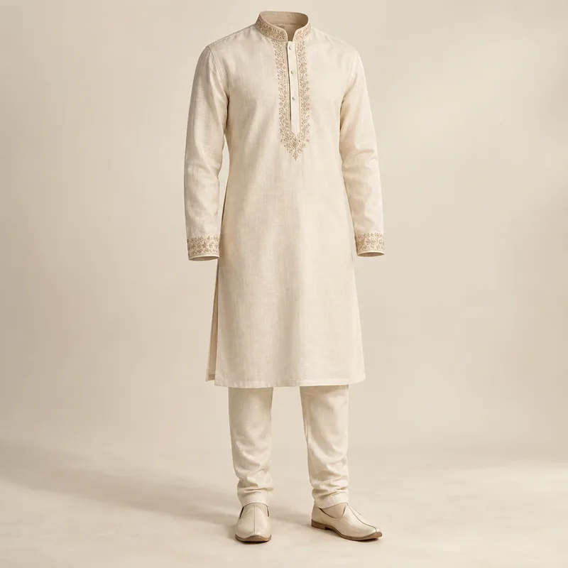
Neckline and cuff embroidery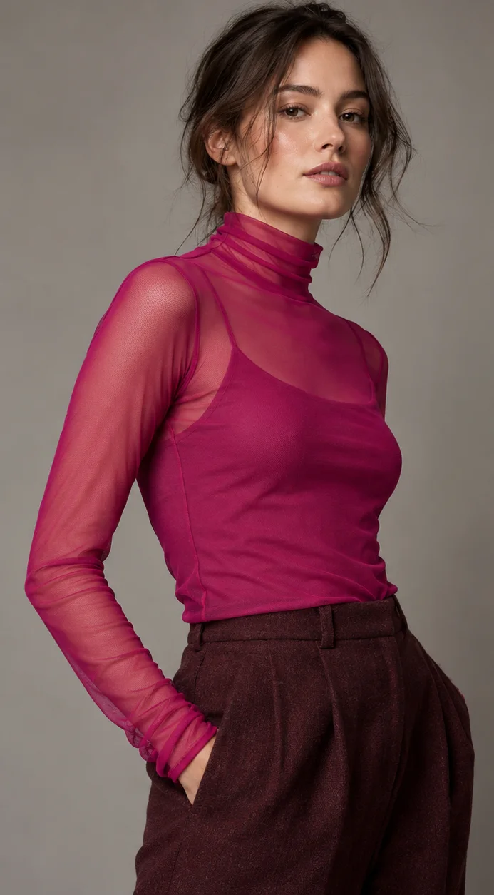
Sheer mesh layering topsWide-leg suit trousersSources: BellaNaija. Africa forecast →
El Gouna Film Festival closing ceremony
El Gouna, Egypt
- Dina El Sherbiny
Mermaid-cut gown with lace details. - Nahed El Sebaei
Long black gown embellished with silver pearls and stones. - Maryam El Khosht
Flowing gown. - Huda El Etreby
Clean-lined design with statement jewellery. - Rakeen Saad
Understated design; named Best Actress for "Owl".
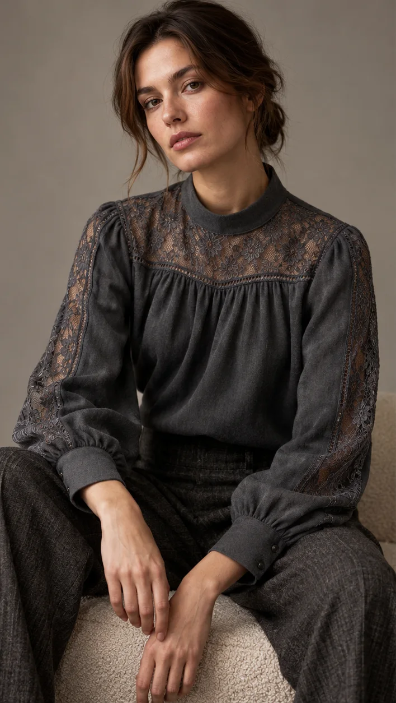
Lace yoke insetsBead-droplet embroidered dressesBlack-and-gold evening gownsSources: The Middle East Observer. Africa forecast →
Zlatan Ibile and Davita Omoniyi traditional wedding
Nigeria
- Davita Omoniyi · Dova Bridals
Custom burgundy corseted mermaid gown with a sweetheart neckline, sheer long sleeves, side train and red crystal lattice beading; Okuku braided crown and layered coral. - Zlatan Ibile · Deji & Kola
Custom cream robe under a textured ivory coat with hand-stitched red beadwork at the shoulders and hem; coral beads and ivory cap. - Veekee James · Veekee James
Fitted mermaid gown with a sheer corset bodice in rows of wine-red crystals, high beaded collar, sheer beaded sleeves and gold sequin waves; champagne fan-pleated gele.
Sources: BellaNaija · BellaNaija. Africa forecast →
Lexus Melbourne Cup Day 2026
Flemington Racecourse, Melbourne, Australia
- Kate Waterhouse · Steven Khalil
Custom deep plum dress with a matching hat, vintage cream leather opera gloves and Jimmy Choo heels. - Rozalia Russian · Alin Le' Kal
Hand-beaded blush corset top and skirt with a soft pink Melissa Jackson hat. - Bambi Northwood-Blythe · Alex Perry
Gold dress with a white mesh bow by Ford Millinery. - Brahman Perera · Romance Was Born
Sequinned lace dress with a 1920s feel, a red flower brooch and a soft blue Stephanie Spencer hat. - Jules Neale · By Johnny
Head-to-toe red with matching opera gloves and a simple headband. - Pip Edwards · J'Aton Couture
Turquoise ensemble with Valentino heels. - Chris Judd
Navy pinstripe suit with a green tie.
Sources: The Nightly · ABC News. Oceania forecast →
Howden Victoria Derby Day (Melbourne Cup Carnival opening)
Flemington Racecourse, Melbourne, Australia
- Helena Christensen · Rebecca Vallance
Custom off-shoulder midi dress in black, cream, ivory and silver metallic tweed: deconstructed tailoring, sculpted neckline, lapel detail, pencil line and diamanté buttons; Nerida Winter headpiece. - Rebecca Vallance · Rebecca Vallance
Bespoke ivory bonded-crepe look with a structured cape and stand collar, midi skirt and lace appliqué. - Annalise Dalins · Effie Kats
White gown worn with a black Embellish Atelier hat, keeping to the black-and-white Derby Day tradition.
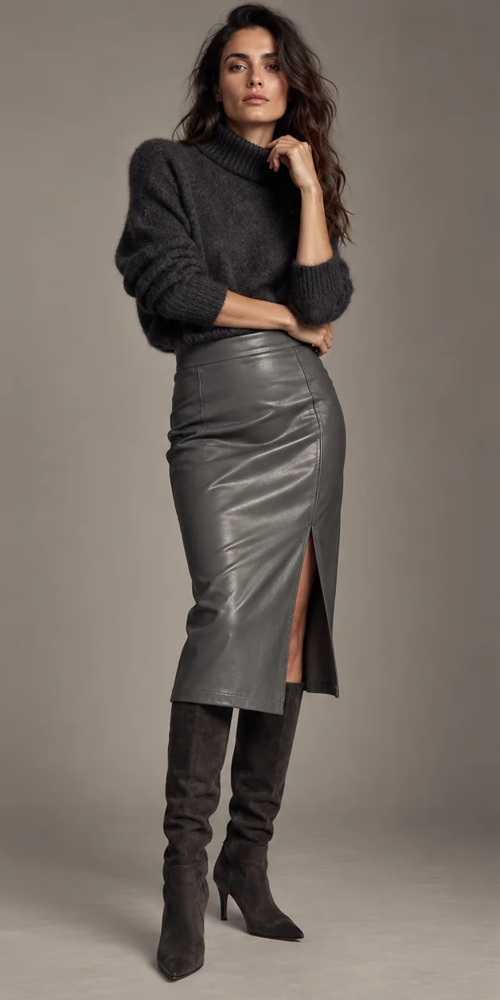
Leather pencil skirts with slitSources: Newsbeep (Australia) · VRC · VRC. Oceania forecast →
TV WEEK Logie Awards
The Star, Sydney, Australia
- Sonia Kruger · Leah Da Glória
Bronze hand-beaded fringed gown. - Kylie Gillies · Carla Zampatti
Off-shoulder tassel top with a black floor-length skirt. - Rebecca Harding · Steven Khalil
Silver gown with fur trim. - Deborah Mailman
Sequinned black suit. - Ada Nicodemou · Leah Da Glória
Custom blue gown.
Sources: Mamamia. Oceania forecast →
Why celebrity looks matter to a forecast
Red carpets, premieres, award shows and high-profile weddings are where runway ideas first meet a mass audience. A look worn by a film star or a musician is photographed thousands of times, searched for within hours and copied by fast-fashion and occasion-wear brands within weeks. That makes celebrity dressing one of the earliest public signals of which runway ideas will travel. Forecut does not treat a single famous outfit as a trend. We treat it as evidence: when the same detail appears on several red carpets, in more than one region, and also on the runway or in retail launches, it supports moving that detail from emerging to rising.
Each event on this page lists who wore what and who designed it, as reported by public sources, followed by a short Forecut read and links to the matching details in the forecast. We never publish celebrity, red-carpet or agency photographs; the details link to Forecut's own illustrations instead.
How to use this page
- Designers: look at construction, not the whole outfit. A corset blouse, a velvet jacket or a beaded hem can be adapted to your own customer at your own price.
- Buyers and merchandisers: watch for repeats. One star in velvet is styling; five red carpets in velvet in two continents is a buying signal for the next season.
- Occasion and bridal brands: wedding and festive celebrity looks (Mumbai, Lagos, Dubai) move faster into retail than film-premiere looks, because customers have a date to dress for.
- Marketing teams: note which designers dress which stars in which market; local labels dressing local stars often matter more to sales than global houses.
Reading celebrity style by region
North America sets the volume: the Academy Museum Gala, award shows and premieres in Los Angeles and New York put next season's runway pieces on camera months before stores. Europe gives tailoring and couture signals through London, Paris, Rome and Venice. Asia is driven by Bollywood festive and wedding dressing in India, K-pop and C-pop brand ambassadors, and Gulf society events; these looks translate into retail very quickly. Africa's strongest influence comes from Nigerian weddings, Nollywood and Afrobeats stars, often dressed by local designers. South America mixes telenovela and music stars with São Paulo and Buenos Aires designers. Oceania's red carpets (the Logies, AACTA Awards, Melbourne Cup) favour Australian designers and land in the southern-hemisphere summer party season.
Common questions
Does a celebrity look make something a trend? No. It is one signal among many. Forecut changes a detail's stage only when red-carpet evidence agrees with runway, retail and trade coverage.
Why are some designers listed as blank? Some reports describe an outfit without naming who made it. We only credit a designer when a public source does.
How often is this page updated? Every week, with the newest events at the top. Older events stay, so you can follow how a look spreads over a season.
Can I use these looks in a mood board? Use the source links to view the original photographs, and respect each photographer's and publication's rights. Forecut's own detail images can be used in internal briefs with credit.